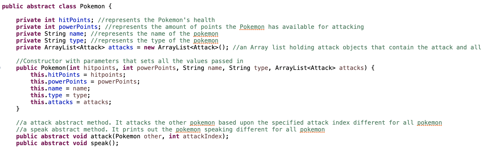

Hello, I'm Jawad Rada, and I'm excited to have you here. I'm currently pursuing my Bachelor's degree at CUNY College of Staten Island, immersing myself in the captivating realm of computer science and technology. My journey into coding began with my fascination for video games, igniting my curiosity about their inner workings and the complexities of coding itself.
More recently, I've developed a profound passion for chess. What's even more thrilling is that I've now reached a stage where I'm not only a player but also a creator, capable of building my very own chess game from the ground up. As I continue this journey, I'm enthusiastic about the endless possibilities that coding and technology hold, and I can't wait to see what the future has in store.
Project Section

I collaborated with two team members to develop a Java-based chess program using JavaFX in Eclipse IDE. Our project facilitated two-player chess matches, focusing on core object-oriented programming principles like polymorphism, inheritance, interfaces, and abstract classes. I played a significant role in designing the graphical user interface (GUI), ensuring the chessboard, pieces, and additional scenes were visually appealing. In particular, I created abstract piece classes with custom methods for calculating legal moves for each piece and contributed to the player interface, which allowed for seamless player turn control.
In my Pokemon project, I crafted a simulation of intense battles between two iconic creatures: a computer-controlled Charizard and a user-controlled Pikachu. This project showcased the power of inheritance relationships and polymorphism in the realm of programming.
The user, as the trainer of Pikachu, had the exciting opportunity to make pivotal decisions during the battle. They could choose between attacking, healing, or even attempting to run from the battle. Each of these choices was implemented through the clever use of polymorphic methods, allowing for dynamic behavior based on user input. The project served as a testament to the effectiveness of object-oriented programming principles.